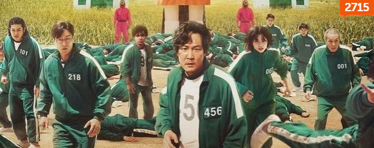
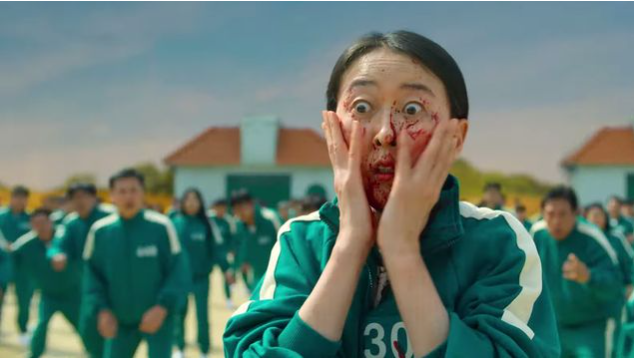
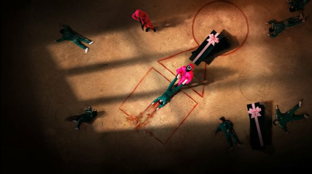
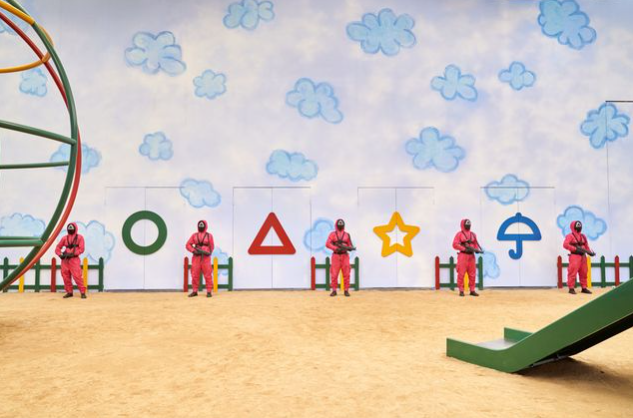
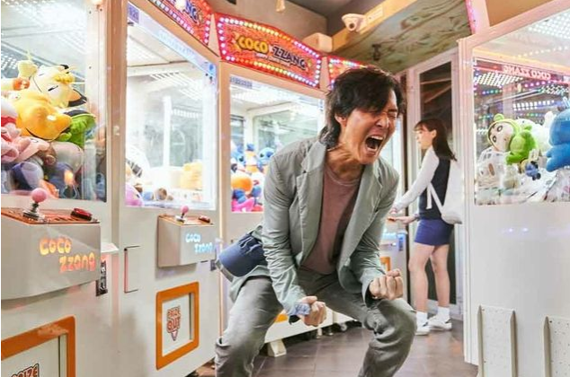
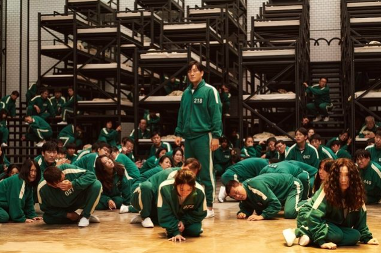
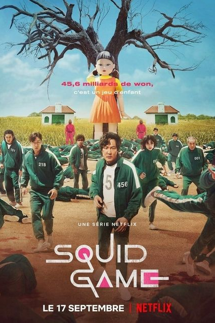

Squid Game : critique qui se prend au jeu sur Netflix
La première saison de Squid Game est sortie sur Netflix . Avec son pitch de départ, 456 joueurs qui s'affrontent dans des jeux à l'issue mortelle, la série sud-coréenne reprend un sous-genre du survival déjà balisé par les films Hunger Games et Battle Royale ou plus récemment Alice In Borderland, n'augurant rien de bien innovant à la clé. Pourtant, il serait dommage de passer à côté de cette nouvelle production originale.
DU PAIN ET DES JEUX
Aussi ludique que ce soit le concept, après Running Man, Rollerball, La Course à la mort de l'an 2000 ou Hunger Games, Battle Royale, Cube, Saw et autres déclinaisons, regarder des gens essayer de survivre à des compétitions meurtrières ou des pièges mortels peut vite devenir ennuyeux tant la formule est de plus en plus éculée. Le récent et très laborieux Escape Game 2 ou le navrant Spirale – l'Héritage de Saw sont d'ailleurs de parfaits exemples des facilités et de la répétitivité de l'exercice. Et ce n'est certainement pas Squid Game , la nouvelle série sud-coréenne de Netflix, qui va totalement réinventer ce sous-genre verrouillé du survival. Pourtant, même s'il s'inspire largement des oeuvres qui l'ont précédé, le drame coréen écrit et réalisé par Hwang Dong-hyuk , se révèle être thriller impitoyable et haletant qui déjoue plusieurs attentes, du moins au début.
Le moment où tout a basculé
Après une scène d'introduction aux airs mélancoliques et une phase d'exposition plus comico-dramatique, le premier épisode marque une rupture de ton brutale et glaçante lors de la première épreuve. Mais à l'inverse des pièges de la franchis Saw, qui ne sont des jeux que dans l'esprit tordu de John Kramer, Squid Game ne mise pas sur la surenchère graphique, ni même la complexité ou l'inventivité de mécanismes sadiques pour torturer ses personnages et plonger ses téléspectateurs dans l'horreur crue et la violence viscérale qui s'amplifie à chaque épisode. Comme dans les mangas Deadman Wonderland et Jeux d'Enfants, la série préfère davantage jouer sur le décalage malaisant et saisissant entre l'imagerie infantile (natures des jeux et direction artistique), et les exécutions froides et anti-spectaculaires qui l'accompagnent.
Le monde est un terrain de jeu
Une façon de pervertir l'innocence de l'enfance et de la superposer à la compétitivité malsaine et cruelle du monde adulte : on ne joue jamais vraiment en solo, l'important n'est pas de participer, mais de gagner, tout est trop souvent une question de chance et ceux qui enfreignent les règles le font toujours au détriment des autres. De fait, une simple partie de billes dans l'épisode 6 devient une longue séquence d'émotion éprouvante, qui convoque sacrifices déchirants et trahisons impardonnables. Rien n'est fait pour nous faire décoller du canapé (les billes n'explosent pas, les terrains ne sont pas des sables mouvants ni des champs de mines) et les situations peuvent parfois paraître ridicules, mais l'intensité, la tension et le stress restent omniprésents, notamment grâce à la réalisation et au montage réfléchis.
Des plans et décors agréablement soignés
JEUX DE MAINS, JEUX DE VILAINS
Même si elle ne se déroule pas dans un monde dystopique comme beaucoup de ses semblables, Squid Game est une énième allégorie du monde contemporain, qui dissèque cette fois les relations socio-économiques et la domination du modèle capitaliste sur les plus démunis (quelle que soit la raison de l'endettement des joueurs), avec la survie sociale comme fil conducteur . Soigneusement sélectionnés pour leur détresse financière, les participants s'affrontent pour repartir avec une cagnotte de près de 45 milliards de wons (plus d'une trentaine de millions de dollars), persuadés qu'ils pourront résoudre tous leurs problèmes et vivre enfin décemment. Spoiler : l'argent ne fait pas le bonheur. On leur propose ainsi un choix entre une mort rapide avec une infime chance de survie, ou le fardeau de leur existence sans aucun moyen de s'en sortir, poussant ainsi la réflexion sur le libre arbitre, mais aussi les valeurs démocratiques , le jeu pouvant s'arrêter à tout moment par un vote à la majorité.
Cet épisode 6 était vraiment terrible
C'est parce qu'ils sont broyés par un système déshumanisé que les joueurs acceptent l'humiliation, d'abord en se faisant gifler en public par un inconnu pour gagner quelques billets, puis en mettant littéralement en jeu leur vie et celle des autres, compte tenu du peu de "valeur" que la société leur accorde. Les épreuves sont cruelles, mais ne sont possibles que parce que les conditions à l'extérieur de l'arène le permettent et que le système exploite cette vulnérabilité, jusqu'à les pousser à renier eux-mêmes leur humanité et à considérer une vie comme un manque à gagner et un concurrent en trop.
C'est d'ailleurs en sortant de son terrain de jeu que Squid Game prend une tournure plus intimiste qu'à l'ordinaire. La série présente des profils divers : un gentil loser qui sert de boussole morale façon Katniss Everdeen (Lee Jung-jae), un homme d'affaires morose (Park Hae-soo), un vieillard fragile (Oh Young-Soo), une immigrée nord-coréenne taciturne (HoYeon Jung), un immigré pakistanais adorable (Tripathi Anupam), un criminel violent (Heo Sung-Tae) et une délinquante qui gueule fort (Kim Joo-Ryung).
En s'accommodant de leurs clichés, tout le casting talentueux donne du relief aux personnages, qui sont la grande force de la série. Grâce au format long (9 épisodes d'environ 1h), le scénario a tout le temps de s'attarder sur les raisons qui les poussent à vouloir continuer le jeu et à s'accrocher paradoxalement à la vie, mais également aux relations qu'ils nouent et dénouent entre chaque round.
Un peu vieux pour les colos
Comme le Tueur au Puzzle qui voulait se persuader que ses tortures étaient bien intentionnées, la mystérieuse entreprise qui organise les jeux se donne elle aussi une vocation altruiste. Soi-disant, elle permet à des gens de différentes classes sociales de se battre de façon égale (mais pas forcément équitable) dans un monde qui ne leur en donnera jamais l'occasion. Enfin ça, c'est ce qu'on a voulu nous faire croire.
Il est dommage que vers la fin, la série succombe à la tentation de faire des riches Américains blancs les gros méchants sadiques qui s'amusent du malheur des pauvres en toute impunité. Un revirement encore plus usé et facile que le concept de départ . Les sous-intrigues plus bancales et prévisibles sur l'infiltration du policier campé par Wi Ha-Joon et la découverte de l'identité du grand manitou des jeux sont d'autres bémols pour le scénario, trop poussif dans le dernier épisode. Une raison ? Il prépare sûrement le terrain pour une seconde saison qui, sans trop de suspense, devrait voir notre gentil loser plus très guilleret essayer de stopper la compagnie, et sauver les pauvres, pour parfaire la comparaison avec Katniss Everdeen et faire de Squid Game un Hunger Game .
